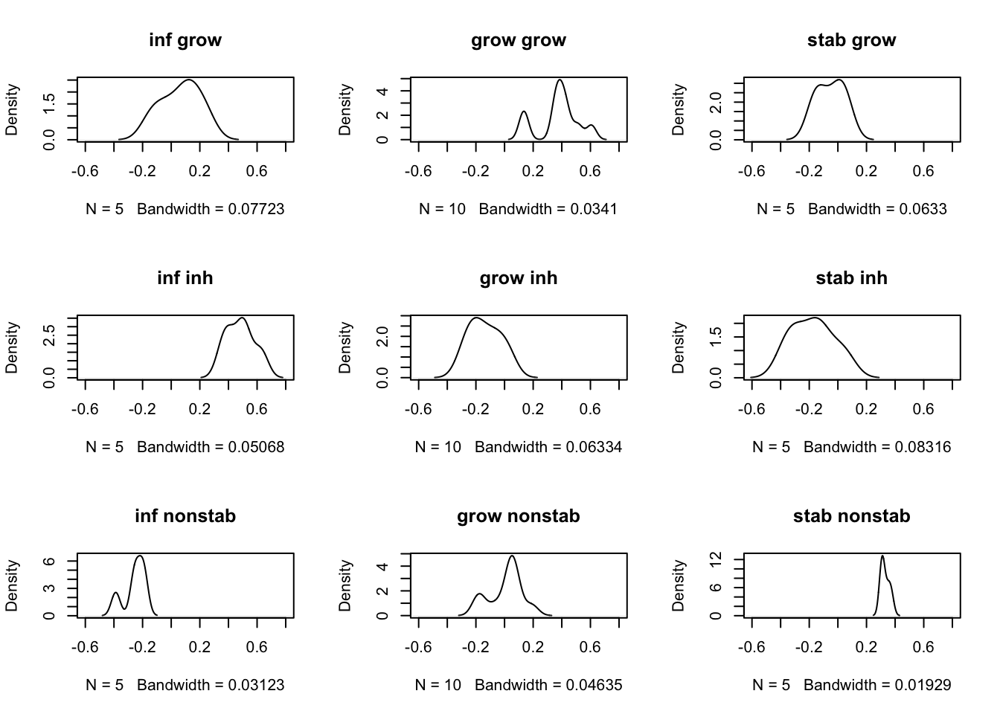
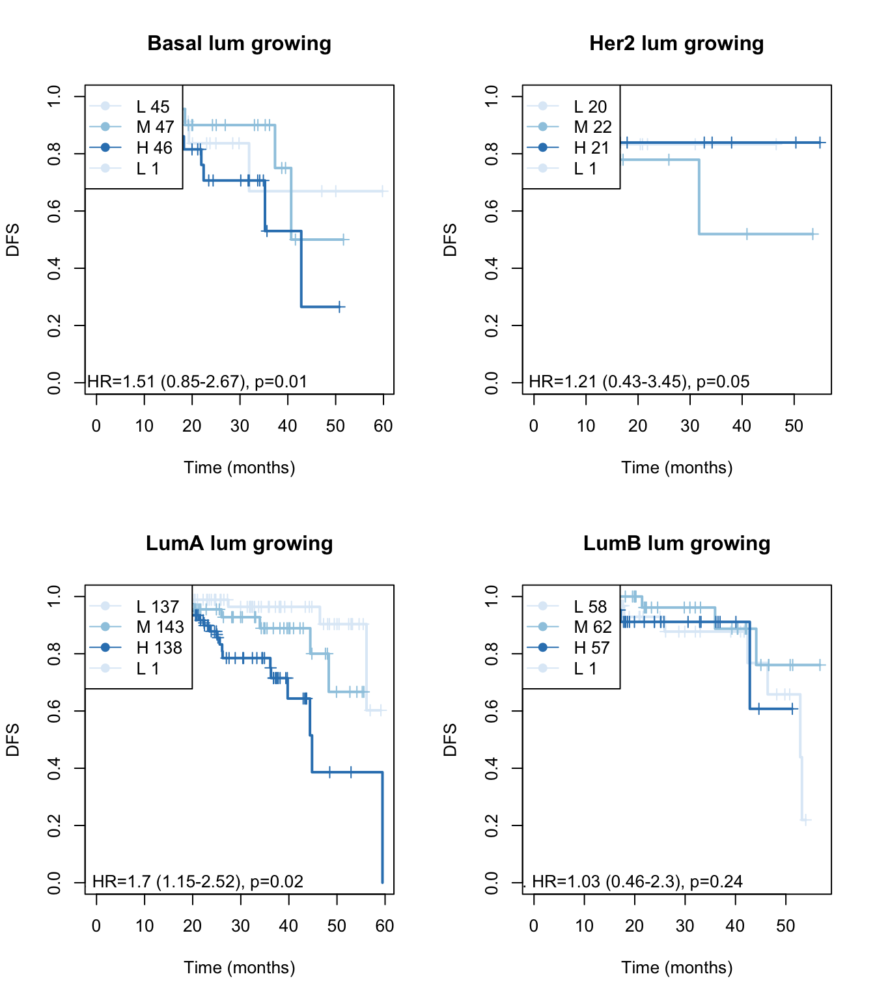
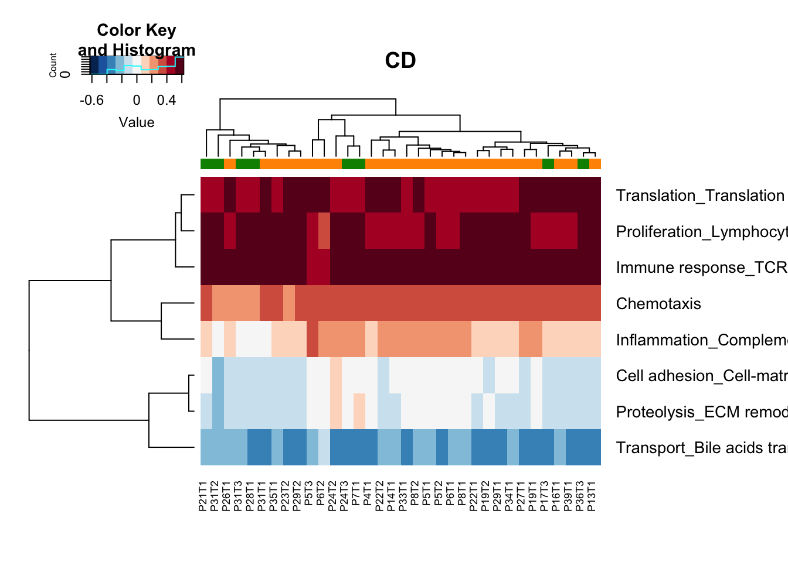

Chapter 12 DESeq analysis: Immunotherapy/Growth comparisons
12.1 Summary of comparisons
Quick plot of the differences in number of differential genes:
Allchanges=rbind(UpDn1, CDUpDn1, DNUpDn1)
Allchanges=cbind(Allchanges, Frac=c("Ep", "Ep", "CD", "CD", "DN", "DN"), dir=rownames(Allchanges))
AllchangesB=melt(as.data.frame(Allchanges), id.vars = c("Frac", "dir"))
ggplot(AllchangesB, aes(x=variable, y=as.numeric(value), fill=dir))+geom_bar(stat="identity",position = "dodge")+facet_grid(Frac~., scale="free_y", space="free_y")+theme(axis.text.x = element_text(angle = 90, hjust = 1))+ylab("No. differential genes")+ggtitle("number of differential genes")+scale_y_log10()
Nsamp=matrix(NA, nrow=6, ncol=ncol(Allchanges))
ta=table(Epdds$Comp4)
tb=table(CDdds$Comp4)
tc=table(DNdds$Comp4)
for (i in 1:4){
Nsamp[1:2, i]=c(ta[xsearch[i]], ta[ysearch[i]])
Nsamp[3:4, i]=c(tb[xsearch[i]], tb[ysearch[i]])
Nsamp[5:6, i]=c(tc[xsearch[i]], tc[ysearch[i]])
}
ta=table(Epdds$Treatment)
tb=table(CDdds$Treatment)
tc=table(DNdds$Treatment)
for (i in 1:3){
Nsamp[1:2, i+4]=c(ta[cList[i]], ta["Vehicle"])
Nsamp[3:4, i+4]=c(tb[cList[i]], tb["Vehicle"])
Nsamp[5:6, i+4]=c(tc[cList[i]], tc["Vehicle"])
}
ta=table(EpddsTreatG$Comp8)
tb=table(CDddsTreatG$Comp8)
tc=table(DNddsTreatG$Comp8)
for (i in 1:4){
Nsamp[1:2, i+7]=c(ta[xsearchA[i]], ta[ysearchB[i]])
Nsamp[3:4, i+7]=c(tb[xsearchA[i]], tb[ysearchB[i]])
Nsamp[5:6, i+7]=c(tc[xsearchA[i]], tc[ysearchB[i]])
}
Nsamp[ ,12]=c(table(EpddsGrowth$Growth), table(CDddsGrowth$Growth), table(DNddsGrowth$Growth))
Nsamp[ ,13]=c(table(EpddsStrMH$MHcut), table(CDddsStrMH$MHcut), table(DNddsStrMH$MHcut))
Nsamp[ ,14]=c(table(EpddsStrIF$IFcut), table(CDddsStrIF$IFcut), table(DNddsStrIF$IFcut))
Nsamp[ ,15]=c(table(EpddsStrknn$knncut), table(CDddsStrknn$knncut), table(DNddsStrknn$knncut))
Nsamp[ ,16]=c(table(Epddscd8$CD8FracCut), table(CDddscd8$CD8FracCut), table(DNddscd8$CD8FracCut))
Nsamp[ ,17]=c(table(EpddsSpatMan$SpatialManual), table(CDddsSpatMan$SpatialManual), table(DNddsSpatMan$SpatialManual))
ta=table(Epddscd8MH$cd8MH)
tb=table(CDddscd8MH$cd8MH)
tc=table(DNddscd8MH$cd8MH)
for (i in 1:4){
Nsamp[1:2, i+17]=c(ta[xsearchC[i]], ta[ysearchD[i]])
Nsamp[3:4, i+17]=c(tb[xsearchC[i]], tb[ysearchD[i]])
Nsamp[5:6, i+17]=c(tc[xsearchC[i]], tc[ysearchD[i]])
}
colnames(Nsamp)=colnames(Allchanges)
Nsamp[ , 22:23]=Allchanges[ ,22:23]
Nsamp2=melt(as.data.frame(Nsamp), id.vars=c("Frac", "dir"))
ggplot(Nsamp2, aes(x=variable, y=as.numeric(value), fill=dir))+geom_bar(stat="identity",position = "dodge")+facet_grid(Frac~., scale="free_y", space="free")+theme(axis.text.x = element_text(angle = 90, hjust = 1)) + scale_fill_discrete(name = "Comparison", labels = c("numerator", "reference"))+ylab("No. samples in comparison")+ggtitle("number of samples in comparison")
#dev.off()Notes:
| Comparison Type | Main cell type impacted |
|---|---|
| Treatment | CD45+, PDL1+LY in the DN, LY may affect Ep |
| growth | Ep and CD45 |
| growth in control | CD and DN |
| Spatial Patterns | CD45, Ep |
| Spatial, high cd8 | all cases |
12.2 DESeq: any treatment vs control
What are the differential genes if we compare any immunotherapy to the control arm?
First look at the epithelial fraction:
# EpddsTreatB=EpddsTreat
# design(EpddsTreatB)=~treatA+factor(Batch)
# EpddsTreatB=DESeq(EpddsTreatB)
epr=results(Epdds)
Xa1=epr[which(epr$padj<0.05 & epr$baseMean>60), ]
epvsd=vst(Epdds)
assay(epvsd)<- limma::removeBatchEffect(assay(epvsd),factor(epvsd$Batch))
Mat2=epvsd[match(rownames(Xa1), rownames(epvsd)), ]
colSCols=ColMerge[ ,1][Mat2$Treatment]
heatmap.2(assay(Mat2), ColSideColors = colSCols, trace="none", scale="row", col=RdBu[11:1], hclustfun = hclust.ave)
DN
List of markers from xcell:
xcellgenes=readxl::read_xlsx("../anntotations/xcell_genes.xlsx", sheet=1)
AllGenes=as.vector(xcellgenes[ ,-c(1:2)])
AllGenes=firstup(tolower(unique(as.character(unlist(AllGenes)))))
#rm list
rmList=c("15L_B_DN", "6R_B_DN", "10L_C_DN", "6R_D_DN")
DNr=results(DNdds)
Xa1=DNr[which(DNr$padj<0.05 & DNr$baseMean>100 & abs(DNr$log2FoldChange)>1.5), ]
# DNvsd=vst(DNddsTreatB)
# assay(DNvsd)<- limma::removeBatchEffect(assay(DNvsd),factor(DNvsd$Batch))
AllG2=rownames(Xa1)[which(rownames(Xa1)%in%c(AllGenes, "Il6"))]
Mat2=vsdLimmaDN[match(AllG2, rownames(vsdLimmaDN)), ]
colnames(Mat2)=Cdata$NewID[match(substr(colnames(Mat2),1 , nchar(colnames(Mat2))-3), Cdata$TumorID)]
colSCols=ColMerge[ ,1][Mat2$Treatment]
heatmap.2(assay(Mat2), ColSideColors = colSCols, trace="none", scale="row", col=RdBu[11:1])
CD45
# CDddsTreatB=CDddsTreat
# design(CDddsTreatB)=~treatA
# CDddsTreatB=DESeq(CDddsTreatB)
CDr=results(CDdds)
Xa1=CDr[which(CDr$padj<0.05 & CDr$baseMean>100 & abs(CDr$log2FoldChange)>1.5), ]
AllG2=rownames(Xa1)[which(rownames(Xa1)%in%RatAllImm)]
Mat2=vsdLimmaCD[match(AllG2, rownames(vsdLimmaCD)), ]
colnames(Mat2)=Cdata$NewID[match(substr(colnames(Mat2),1 , nchar(colnames(Mat2))-5), Cdata$TumorID)]
colSCols=ColMerge[ ,1][Mat2$Treatment]
pdf("figure-outputs/FIgure3j_1_vs_all.pdf", height=7, width=6)
heatmap.2(assay(Mat2), ColSideColors = colSCols, trace="none", scale="row", col=RdBu[11:1],
hclustfun = hclust.ave)
dev.off()
## quartz_off_screen
## 2
write.csv(assay(Mat2), file="nature-tables/Figure3j_1_vs_all.csv")## ALSO LOOK AT the pairwise comparisons and pull out those genes
ax1=results(CDddsTreat, c("Treatment", "LY", "Vehicle"))
bx1=results(CDddsTreat, c("Treatment", "PDL1", "Vehicle"))
cx1=results(CDddsTreat, c("Treatment", "PDL1+LY", "Vehicle"))
G1=rownames(ax1)[which(ax1$baseMean>100 & ax1$padj<0.05 & abs(ax1$log2FoldChange)>2)]
G2=rownames(bx1)[which(bx1$baseMean>100 & bx1$padj<0.05 & abs(bx1$log2FoldChange)>2)]
G3=rownames(cx1)[which(cx1$baseMean>100 & cx1$padj<0.05 & abs(cx1$log2FoldChange)>2)]
AllG=unique(c(G1, G2, G3))
AllG2=AllG[which(AllG%in%RatAllImm)]
Mat2=vsdLimmaCD[match(AllG2, rownames(vsdLimmaCD)), ]
colnames(Mat2)=Cdata$NewID[match(substr(colnames(Mat2),1 , nchar(colnames(Mat2))-5), Cdata$TumorID)]
colSCols=ColMerge[ ,1][Mat2$Treatment]
pdf("figure-outputs/FIgure3j_all_comparisons.pdf", height=9, width=6)
heatmap.2(assay(Mat2), ColSideColors = colSCols, trace="none", scale="row", col=RdBu[11:1], hclustfun = hclust.ave)
dev.off()
## quartz_off_screen
## 2
write.csv(assay(Mat2), file="nature-tables/Figure3j_all_comparisons.csv")12.2.1 EPCAM samples
Note that there are a subset of samples different from the other based on CD8, growth and MH index (6RB, 3NB, 10LD, 8LD, 11ND) but these parameters don’t group the other samples well
There is a small subset of samples which have high expression of CCLs and based on the top variable genes, there seems to be three types of epithelial cases.
SampleFrac="Ep"
allEpGenes=unlist(EpCompSig)
allEpTab=table(allEpGenes)
EpGenesList=names(allEpTab)[which(allEpTab>1)]
#EpGenesList=EpGenesList[-grep("LOC", EpGenesList)]
#EpGenesList=EpGenesList[-grep("RGD", EpGenesList)]
# also, remove all samples which have a base mean less than 10
x1=EpComp4[[1]]$baseMean[match(EpGenesList, EpComp4[[1]]$Gene)]
x2=which(x1>100)
vstEp=vst(Epdds, blind=T)
#EpddsTreatG$Comp8_v2=factor(paste(EpddsTreatG$Treatment, EpddsTreatG$Growth))
ColsideCols=hue_pal()(2)[Epdds$CD8FracCut]
ColsideColsB=hue_pal()(4)[Epdds$Treatment]
ColsideColsC=hue_pal()(2)[Epdds$Growth]
ColsideColsD=hue_pal()(2)[Epdds$MHcut]
colTable=rbind(ColsideCols, ColsideColsB, ColsideColsC, ColsideColsD)
rownames(colTable)=c("CD8", "Treatment", "growth", "MH")
#pdf(sprintf("rslt/DESeq/DEseq_comparisons_%s.pdf", SampleFrac), width=7, height=10)
sampleDist=dist(t(assay(vstEp)))
sampleDistMatrix <- as.matrix(sampleDist)
heatmap.plus(sampleDistMatrix, trace="none", scale="none", col=brewer.pal(9, "Blues")[9:1], ColSideColors = t(colTable), main=sprintf("Similarity between %s samples", SampleFrac))
# Take the top 150 variable genes
# compute the sds for each genes
sds = rowSds(assay(vstEp))
means=rowMeans(assay(vstEp))
CVs=sds/means
CVs=CVs[-which(means<7)]
sds2=sort(CVs, decreasing = T)
heatmap.plus(assay(vstEp)[names(sds2)[1:100], ], trace="none", scale="row", col=RdBu[11:1], ColSideColors = t(colTable), main=sprintf("top 100 variable genes all %s samples", SampleFrac))
heatmap.plus(assay(vstEp)[EpGenesList[x2], ], trace="none", scale="row", col=RdBu[11:1], ColSideColors = t(colTable),
main=sprintf("DEG at least 2 %s samples", SampleFrac))
# Make a table for these genes
FCvalues=matrix(NA, nrow=length(x2), ncol=length(EpComp4))
for (i in 1:length(EpComp4)){
FCvalues[ ,i]=EpComp4[[i]]$log2FoldChange[match(EpGenesList[x2], EpComp4[[i]]$Gene)]
}
colnames(FCvalues)=names(EpComp4)
rownames(FCvalues)=EpGenesList[x2]
# for each list pick the top 50 diff genes FC>2 and baseman > 50
glist=NA
for (i in 1:length(EpComp4)){
glist=c(glist, EpComp4[[i]]$Gene[which(EpComp4[[i]]$padj<0.1 & abs(EpComp4[[i]]$log2FoldChange)>2 & EpComp4[[i]]$baseMean>25)])
}
ColsideCols=SetCols[EpddsTreatG$Comp8]
glistmod=unique(glist)
glistmod=glistmod[-grep("LOC", glistmod)]
glistmod=na.omit(glistmod[-grep("RGD", glistmod)])
#heatmap.plus(assay(vstEp)[glistmod, ], trace="none", scale="row", col=RdBu[11:1], ColSideColors = t(colTable), main=sprintf("All DEG %s samples", SampleFrac))We can also view this in the form of what is highly expressed in each comparison. Below is a heatmap of the fold changes:
# distance of the samples to one another
par(oma=c(1,0,0,0))
heatmap.2(FCvalues, trace="none", scale="row", col=RdBu[11:1],
main=sprintf("All comparisons %s, log2FC for each gene", SampleFrac))
#dev.off()Below, we visualise the enrichment scores using different gene sets and
## GSEA results temp.
pdf("~/Desktop/Fig5Gene_set_enrichment.pdf", height=10, width=10)
#Epismr3=ismr4
#pdf(sprintf("rslt/DESeq/GSEA_signature_comparisons_%s.pdf", SampleFrac), width=10, height=12)
for (i in 1:length(Epismr3)){
x1=Epismr3[[i]]
# find padj<0.1
idx2=lapply(seq(3, ncol(x1), by=2), function(x) which(as.numeric(as.character(x1[ ,x]))<0.01))
unList=table(unlist(idx2))
#pickThese=names(unList)#[which(unList>1)]
pickThese2=names(unList)[which(unList>1)]
if (length(pickThese2)>100){
temp=x1[as.numeric(pickThese2), seq(2, ncol(x1), by=2)]
temp2=sapply(temp, function(x) as.numeric(as.character(x)))
temp2=rowSds(abs(temp2))
names(temp2)=pickThese2
temp2=sort(temp2, decreasing = T)
pickThese2=names(temp2)[1:100]
}
x23=x1[as.numeric(pickThese2), seq(2, ncol(x1), by=2)]
x234=sapply(x23, function(x) as.numeric(as.character(x)))
rownames(x234)=rownames(x23)
par(oma=c(2,0,0,2))
heatmap.2(x234, col=RdBu[11:1], scale="none", trace="none", main=sprintf("%s pathways %s fraction",
names(Epismr3)[i], SampleFrac))
}
#dev.off()
# boxplot(assay(vstEp)["Tap1", ]~EpddsTreatG$Treatment)
# boxplot(assay(vstEp)["Cd74", ]~EpddsTreatG$Comp4)
# boxplot(assay(vstEp)["Cd8a", ]~EpddsTreatG$Treatment)
# boxplot(assay(vstEp)["Ctla4", ]~EpddsTreatG$Treatment)
# boxplot(assay(vstEp)["Tgfbr1", ]~EpddsTreatG$Comp8)
dev.off()
### CD45 comparisons
SampleFrac="CD"
allCDGenes=unlist(CDCompSig)
allCDTab=table(allCDGenes)
CDGenesList=names(allCDTab)[which(allCDTab>1)]
#CDGenesList=CDGenesList[-grCD("LOC", CDGenesList)]
#CDGenesList=CDGenesList[-grCD("RGD", CDGenesList)]
# also, remove all samples which have a base mean less than 10
x1=CDComp4[[1]]$baseMean[match(CDGenesList, CDComp4[[1]]$Gene)]
x2=which(x1>25)
vstCD=vst(CDdds, blind=T)
CDddsTreatG$Comp8_v2=factor(paste(CDddsTreatG$Treatment, CDddsTreatG$Growth))
ColsideCols=DiffCols[CDddsTreatG$Comp8_v2]
ColsideColsB=hue_pal()(4)[CDddsTreatG$Treatment]
ColsideColsC=hue_pal()(2)[CDddsTreatG$Growth]
colTable=rbind(ColsideCols, ColsideColsB, ColsideColsC)
rownames(colTable)=c("Treat+growth", "Treatment", "growth")
#pdf(sprintf("rslt/DESeq/DEseq_comparisons_%s.pdf", SampleFrac), width=7, height=10)
sampleDist=dist(t(assay(vstCD)))
sampleDistMatrix <- as.matrix(sampleDist)
heatmap.plus(sampleDistMatrix, trace="none", scale="none", col=brewer.pal(11, "Blues")[11:1], ColSideColors = t(colTable), main=sprintf("Similarity between %s samples", SampleFrac))
# Take the top 150 variable genes
# compute the sds for each genes
sds = rowSds(assay(vstCD))
means=rowMeans(assay(vstCD))
CVs=sds/means
CVs=CVs[-which(means<7)]
sds2=sort(CVs, decreasing = T)
heatmap.plus(assay(vstCD)[names(sds2)[1:200], ], trace="none", scale="row", col=RdBu[11:1], ColSideColors = t(colTable), main=sprintf("top 200 variable genes all %s samples", SampleFrac))
heatmap.plus(assay(vstCD)[CDGenesList[x2], ], trace="none", scale="row", col=RdBu[11:1], ColSideColors = t(colTable),
main=sprintf("DEG at least 2 %s samples", SampleFrac))
# Make a table for these genes
FCvalues=matrix(NA, nrow=length(x2), ncol=length(CDComp4))
for (i in 1:length(CDComp4)){
FCvalues[ ,i]=CDComp4[[i]]$log2FoldChange[match(CDGenesList[x2], CDComp4[[i]]$Gene)]
}
colnames(FCvalues)=names(CDComp4)
rownames(FCvalues)=CDGenesList[x2]
# for each list pick the top 50 diff genes FC>2 and baseman > 50
glist=NA
for (i in 1:length(CDComp4)){
glist=c(glist, CDComp4[[i]]$Gene[which(CDComp4[[i]]$padj<0.1 & abs(CDComp4[[i]]$log2FoldChange)>2 & CDComp4[[i]]$baseMean>25)])
}
ColsideCols=SetCols[CDddsTreatG$Comp8]
glistmod=unique(glist)
#glistmod=glistmod[-grep("LOC", glistmod)]
#glistmod=na.omit(glistmod[-grCD("RGD", glistmod)])
heatmap.plus(assay(vstCD)[na.omit(glistmod), ], trace="none", scale="row", col=RdBu[11:1], ColSideColors = t(colTable),
main=sprintf("All DEG %s samples", SampleFrac))
# distance of the samples to one another
par(oma=c(2,0,0,0))
heatmap.2(FCvalues, trace="none", scale="row", col=RdBu[11:1],
main=sprintf("All comparisons %s, log2FC for each gene", SampleFrac))
#dev.off()
#CDismr3=ismr4
#pdf(sprintf("rslt/DESeq/GSEA_signature_comparisons_%s.pdf", SampleFrac), width=10, height=12)
for (i in 1:length(CDismr3)){
x1=CDismr3[[i]]
# find padj<0.1
idx2=lapply(seq(3, ncol(x1), by=2), function(x) which(as.numeric(as.character(x1[ ,x]))<0.01))
unList=table(unlist(idx2))
#pickThese=names(unList)#[which(unList>1)]
pickThese2=names(unList)[which(unList>1)]
if (length(pickThese2)>100){
temp=x1[as.numeric(pickThese2), seq(2, ncol(x1), by=2)]
temp2=sapply(temp, function(x) as.numeric(as.character(x)))
temp2=rowSds(abs(temp2))
names(temp2)=pickThese2
temp2=sort(temp2, decreasing = T)
pickThese2=names(temp2)[1:100]
}
x23=x1[as.numeric(pickThese2), seq(2, ncol(x1), by=2)]
x234=sapply(x23, function(x) as.numeric(as.character(x)))
rownames(x234)=rownames(x23)
par(oma=c(2,0,0,2))
heatmap.2(x234, col=RdBu[11:1], scale="none", trace="none", main=sprintf("%s pathways %s fraction",
names(CDismr3)[i], SampleFrac))
}
#dev.off()
### DN samples
SampleFrac="DN"
allDNGenes=unlist(DNCompSig)
allDNTab=table(allDNGenes)
DNGenesList=names(allDNTab)[which(allDNTab>1)]
#DNGenesList=DNGenesList[-grep("LOC", DNGenesList)]
#DNGenesList=DNGenesList[-grep("RGD", DNGenesList)]
# also, remove all samples which have a base mean less than 10
x1=DNComp4[[1]]$baseMean[match(DNGenesList, DNComp4[[1]]$Gene)]
x2=which(x1>25)
vstDN=vst(DNdds, blind=T)
DNddsTreatG$Comp8_v2=factor(paste(DNddsTreatG$Treatment, DNddsTreatG$Growth))
ColsideCols=DiffCols[DNddsTreatG$Comp8_v2]
ColsideColsB=hue_pal()(4)[DNddsTreatG$Treatment]
ColsideColsC=hue_pal()(2)[DNddsTreatG$Growth]
colTable=rbind(ColsideCols, ColsideColsB, ColsideColsC)
rownames(colTable)=c("Treat+growth", "Treatment", "growth")
#pdf(sprintf("rslt/DESeq/DEseq_comparisons_%s.pdf", SampleFrac), width=7, height=10)
sampleDist=dist(t(assay(vstDN)))
sampleDistMatrix <- as.matrix(sampleDist)
heatmap.plus(sampleDistMatrix, trace="none", scale="none", col=brewer.pal(11, "Blues")[11:1], ColSideColors = t(colTable), main=sprintf("Similarity between %s samples", SampleFrac))
# Take the top 150 variable genes
# compute the sds for each genes
sds = rowSds(assay(vstDN))
means=rowMeans(assay(vstDN))
CVs=sds/means
CVs=CVs[-which(means<7)]
sds2=sort(CVs, decreasing = T)
heatmap.plus(assay(vstDN)[names(sds2)[1:200], ], trace="none", scale="row", col=RdBu[11:1], ColSideColors = t(colTable), main=sprintf("top 200 variable genes all %s samples", SampleFrac))
heatmap.plus(assay(vstDN)[DNGenesList[x2], ], trace="none", scale="row", col=RdBu[11:1], ColSideColors = t(colTable),
main=sprintf("DEG at least 2 %s samples", SampleFrac))
# Make a table for these genes
FCvalues=matrix(NA, nrow=length(x2), ncol=length(DNComp4))
for (i in 1:length(DNComp4)){
FCvalues[ ,i]=DNComp4[[i]]$log2FoldChange[match(DNGenesList[x2], DNComp4[[i]]$Gene)]
}
colnames(FCvalues)=names(DNComp4)
rownames(FCvalues)=DNGenesList[x2]
# for each list pick the top 50 diff genes FC>2 and baseman > 50
glist=NA
for (i in 1:length(DNComp4)){
glist=c(glist, DNComp4[[i]]$Gene[which(DNComp4[[i]]$padj<0.1 & abs(DNComp4[[i]]$log2FoldChange)>2 & DNComp4[[i]]$baseMean>25)])
}
ColsideCols=SetCols[DNddsTreatG$Comp8]
glistmod=na.omit(unique(glist))
#glistmod=glistmod[-grep("LOC", glistmod)]
#glistmod=na.omit(glistmod[-grep("RGD", glistmod)])
heatmap.plus(assay(vstDN)[glistmod, ], trace="none", scale="row", col=RdBu[11:1], ColSideColors = t(colTable),
main=sprintf("All DEG %s samples", SampleFrac))
# distance of the samples to one another
par(oma=c(2,0,0,0))
heatmap.2(FCvalues, trace="none", scale="row", col=RdBu[11:1],
main=sprintf("All comparisons %s, log2FC for each gene", SampleFrac))
#dev.off()
#DNismr3=ismr4
#pdf(sprintf("rslt/DESeq/GSEA_signature_comparisons_%s.pdf", SampleFrac), width=10, height=12)
for (i in 1:length(DNismr3)){
x1=DNismr3[[i]]
# find padj<0.1
idx2=lapply(seq(3, ncol(x1), by=2), function(x) which(as.numeric(as.character(x1[ ,x]))<0.01))
unList=table(unlist(idx2))
#pickThese=names(unList)#[which(unList>1)]
pickThese2=names(unList)[which(unList>1)]
if (length(pickThese2)>100){
temp=x1[as.numeric(pickThese2), seq(2, ncol(x1), by=2)]
temp2=sapply(temp, function(x) as.numeric(as.character(x)))
temp2=rowSds(abs(temp2))
names(temp2)=pickThese2
temp2=sort(temp2, decreasing = T)
pickThese2=names(temp2)[1:100]
}
x23=x1[as.numeric(pickThese2), seq(2, ncol(x1), by=2)]
x234=sapply(x23, function(x) as.numeric(as.character(x)))
rownames(x234)=rownames(x23)
par(oma=c(2,0,0,2))
heatmap.2(x234, col=RdBu[11:1], scale="none", trace="none", main=sprintf("%s pathways %s fraction",
names(DNismr3)[i], SampleFrac))
}
#dev.off()12.3 Growing vs stable emphasis
Below, we focus specifically on the growing vs stable comparison in greater depth. Here, we look at the 3 different fractions in greater depth and look at volcano plots of DEG and heatmaps of differential genes. Samples are colored according to whether they are growing or stable
12.3.1 DN fraction
#pdf(sprintf("rslt/DESeq/volcano_plots_differences_stable_vs_growing_%s.pdf", Sys.Date()), height=7, width=8)
DNa1=DNComp4$stable_vs_growing
DNa=DNComp4$stable_vs_growing[ which(DNComp4$stable_vs_growing$padj<0.1 & DNComp4$stable_vs_growing$baseMean>50 & abs(DNComp4$stable_vs_growing$log2FoldChange)>1.5), ]
with(DNa1, plot(log2FoldChange, -log10(padj), pch=20, main="Volcano plot: DN Stable (+) vs Growing (-)", cex=1.0, xlab=bquote(~Log[2]~fold~change), ylab=bquote(~-log[10]~Q~value)))
with(subset(DNa1, padj<0.1 & abs(log2FoldChange)>1.5), points(log2FoldChange, -log10(padj), pch=20, col="red", cex=0.5))
with(subset(DNa1, padj<0.1 & abs(log2FoldChange)>1.5), text(log2FoldChange+0.05, -log10(padj)+0.05, Gene, pch=20, col="red", cex=0.75))
heatmap.2(assay(vstDN)[ DNa$Gene, ], scale="row", trace="none", ColSideColors = as.character(as.numeric(vstDN$Growth)), col=RdBu[11:1], main="DN genes")
12.3.2 CD fraction
Volcano plot
#pdf("~/Desktop/Figure4G_CD_stable_growing.pdf", height=12, width=12)
CDa1=CDComp4$stable_vs_growing
CDa=CDComp4$stable_vs_growing[ which(CDComp4$stable_vs_growing$padj<0.05 & CDComp4$stable_vs_growing$baseMean>100 & abs(CDComp4$stable_vs_growing$log2FoldChange)>2), ]
with(CDa1, plot(log2FoldChange, -log10(padj), pch=20, main="Volcano plot: CD Stable (+) vs Growing (-)", cex=1.0, xlab=bquote(~Log[2]~fold~change), ylab=bquote(~-log[10]~Q~value)))
with(subset(CDa1, padj<0.1 & abs(log2FoldChange)>1.5), points(log2FoldChange, -log10(padj), pch=20, col="red", cex=0.5))
with(subset(CDa1, padj<0.1 & abs(log2FoldChange)>1.5), text(log2FoldChange+0.05, -log10(padj)+0.05, Gene, pch=20, col="red", cex=0.75))
Figure 12.1: volcano plot of DEG stable vs growing CD45
Here are a bunch of heatmaps, which are then separated by wehther genes are downregulated (growing specific) or upregulated (stable specific)
heatmap.2(assay(vstCD)[ CDa$Gene, ], scale="row", trace="none", ColSideColors = as.character(as.numeric(vstCD$Growth)), col=RdBu[11:1], main="CD genes")
## growing specific
CDg=CDa$Gene[which(CDa$log2FoldChange<0)]
heatmap.2(assay(vstCD)[CDg, ], scale="row", trace="none", ColSideColors = as.character(as.numeric(vstCD$Growth)), col=RdBu[11:1], main="CD genes growing")
## stable specific
CDs=CDa$Gene[which(CDa$log2FoldChange>0)]
heatmap.2(assay(vstCD)[CDs, ], scale="row", trace="none", ColSideColors = as.character(as.numeric(vstCD$Growth)), col=RdBu[11:1], main="CD genes stable")
12.3.3 Ep Fraction
Epa1=EpComp4$stable_vs_growing
Epa=EpComp4$stable_vs_growing[ which(EpComp4$stable_vs_growing$padj<0.1 & EpComp4$stable_vs_growing$baseMean>50 & abs(EpComp4$stable_vs_growing$log2FoldChange)>1.5), ]
with(Epa1, plot(log2FoldChange, -log10(padj), pch=20, main="Volcano plot: Ep Stable vs Growing", cex=1.0, xlab=bquote(~Log[2]~fold~change), ylab=bquote(~-log[10]~Q~value)))
with(subset(Epa1, padj<0.1 & abs(log2FoldChange)>1.5), points(log2FoldChange, -log10(padj), pch=20, col="red", cex=0.5))
with(subset(Epa1, padj<0.1 & abs(log2FoldChange)>1.5), text(log2FoldChange+0.05, -log10(padj)+0.1, Gene, pch=20, col="red", cex=0.75))
heatmap.2(assay(vstEp)[ Epa$Gene, ], scale="row", trace="none", ColSideColors = as.character(as.numeric(vstEp$Growth)), col=RdBu[11:1], main="Ep genes")